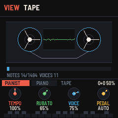
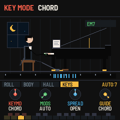

Pianola Manual
Pianola is a modern tap-played player grand piano for the M-VAVE FM-1. It pairs an 87-roll classical library (plus 4 recordable user rolls) with a dual-core 396 MHz physical-modal concert grand engine: 16 stiff-string partials per voice, 3-string unison beating, longitudinal bass phantom partials, a 16-mode spatial bridge resonator, 5-band hammer/damper felt noise, sympathetic open strings, a 4-line Hadamard FDN concert hall, and a transparent stereo peak-hold limiter.


1Tap-Playing the Pianola (Default ON, When Stopped)
When Pianola powers on, Pianola mode is immediately active (amber TAP + PIANOLA badge on screen, ARP LED lit):
- Tap any of the 27 keys to step chord-by-chord through the loaded piano roll (Clair de lune is loaded first).
- Your timing = the phrasing: linger on a climax, rush an arpeggio, breathe between bars — every strike fires on your exact finger landing.
- Your touch = the dynamics: the FM-1's velocity-calibrated silicone keys scale every chord from hushed pianissimo to concert fortissimo while preserving the score's melody-over-accompaniment voicing (
VOICEknob). - Hold & Release: hold a key to let its notes ring; release to lift dampers (while automatic harmonic pedalling sustains across chord tones according to
PEDAL).
2Live Punch-In FX & Pianist Flourishes (During PLAY)
Press PLAY to start the roll hands-free. While playing in Pianola mode, the top-right badge switches to cyan LIVE FX and the 27 keys become a Pocket-Operator-style live performance keyboard — hold any key (or combine several!) to reshape the performance, and release to drop cleanly right back into the score at the exact splice point:
Left 12 Keys (F3..E4) — PO-Style Time, Loop & Dynamics FX
| Key | Effect | Behavior |
|---|---|---|
F3 (k0) | HALF 0.5X | Half-time slowdown |
F#3 (k1) | BRAKE | Mechanical/tape rubato slowdown while held |
G3 (k2) | FAST 1.5X | Expressive 1.5× forward rush |
G#3 (k3) | FREEZE | Sustains damper pedal & pauses score at splice point; releases cleanly |
A3 / A#3 / B3 (k4..k6) | RPT 1/2 · 1/4 · 1/8 | Beat-synced roll repeat loops around the splice point; snaps cleanly back on release |
C4 (k7) | STACCATO | Lifts damper pedal & shortens notes to crisp ~72 ms staccato |
C#4 (k8) | UNA FELT | Instant soft una-corda felt hush |
D4 (k9) | SWELL FF | Engages damper pedal & boosts concert fortissimo swell |
D#4 / E4 (k10..k11) | OCT -1 / OCT +1 | Deepens bass an octave / lifts melody an octave |
Right 15 Keys (F4..G5) — In-Key & Tempo-Synced Pianist Flourishes
Every flourish locks to the roll's live detected chord & scale and scales its timing to TEMPO:
F4BASS OCT·F#4PEDAL 5TH·G4ARP UP·G#4ARP DN·A4HARP RUN·A#4ROLL CHDB4TRILL(sustains while held) ·C5TURN·C#5MORDENT·D5TREMOLO(sustains while held)D#5SHIMMER·E5GRACE 9·F5OCT MEL·F#5CADENZA·G5GLISS
3Breaking Out to Basic Piano & Chord Mode

- Basic Piano (
ARPbutton): TapARPonce to turn Pianola tap-play off and play a pure, velocity- and pressure-sensitive 27-key Concert Grand Piano (OCT-/OCT+spans all 88 piano keys A0–C8). TapARPagain to jump straight back to Pianola mode. - Sustain Pedal (Hold
ARP0.45s or MIDI CC64): Latch/release the damper pedal with audible felt landing whump and open-string sigh. - One-Finger Chord Mode (
LFObutton): PressLFOto open theKEYSdeck (pressLFOagain to toggle Chord Mode ↔ Pianola): - Left 7 keys (F3..B3): Harmony modifiers —5(F3),sus2(F#3),6(G3),sus4(G#3),7(A3),dim(A#3),9(B3). InAUTOmode (K2), a quick tap locks/unlocks (holdLFO0.7s to clear all locks) and holding a modifier while pressing a chord applies it momentarily. - Upper 20 keys (C4..G5): Voiced concert grand chords (CLOSE,OPENwide voicing, orROLLpianist arpeggio viaK3). - Headphones & USB Audio: Plugging in headphones (or recording over USB Audio) automatically switches from speaker voicing to full-range 3D stereo harp width and deep sub-bass.
3Choosing Rolls & Recording Your Own
- Browse Rolls (
PRESETencoder): Step through 87 public-domain piano rolls (Debussy, Satie, Chopin, Beethoven, Bach, Mozart, Schubert, Schumann, Brahms, Grieg, Joplin) plus 4 User Slots (USER SONG 1..4). - Composer Shelves (
ALGOencoder): Filter byALL,DEBUSSY/SATIE,CHOPIN,BEETHOVEN,BAROQUE,CLASSICAL,ROMANTIC,RAGTIME/WALTZ, orUSER SLOTS. - Scrub Bars (
SELECTencoder): Jump backward or forward bar-by-bar at any time. - Rewind (
SEQ): Stop auto-play, rewind the current roll to bar 1, and silence ringing strings. - Record a Custom Roll (
REC+SAVE): PressRECto arm a User Slot (switch to Basic Piano or Chord Mode or play an external MIDI keyboard — recording starts on your first note). PressRECorSEQto finish, then pressSAVEto store your roll in flash. You can then tap-play your own recording in Pianola mode! (HoldEDIT1s on a User Slot to clear it.)
4The Four Control Decks
| Button | Deck | Knob 1 (K1) | Knob 2 (K2) | Knob 3 (K3) | Knob 4 (K4) |
|---|---|---|---|---|---|
HOME / FX | ROLL | TEMPO (50–150%) | RUBATO (0–100%) | VOICE (melody voicing) | PEDAL (DRY, HALF, AUTO, LUSH) |
SEL | BODY | LID (CLOSE..CONCT) | BODY (UPRGT..CONCT) | STRING (PURE..FELT) | ACTION (LIGHT..NOISY) |
ENV | HALL | ROOM (PARLR..CATHD) | SEAT (BENCH..BACK) | SOFT (AUTO / UNA) | GUIDE (OFF, SCALE, CHORD) |
LFO | KEYS | KEYMD (PIANO, CHORD, PIANOLA) | MODS (AUTO, LOCK, HOLD) | SPREAD (CLOSE, OPEN, ROLL) | GUIDE (OFF, SCALE, CHORD) |
5Views, Themes & MIDI / Bluetooth
- Pixel-Art Views (
EDIT): Cycle STAGE (animated moonlit concert grand), HARP (88 live strings + damper rail), and TAPE (dual-reel roll transport + polyphony meter). - Theme & Bluetooth (
GLO): TapGLOto switch between OP-Dark and OP-Paper themes. HoldGLO1s to toggle Bluetooth MIDI on/off; holdREC1s to scan/pair a nearby BLE MIDI keyboard (select withALGO, holdRECto connect). - External MIDI: Full USB MIDI, TRS MIDI, and BLE MIDI input (notes, velocity, CC64 sustain) always plays the grand piano directly.